<?xml version="1.0" encoding="UTF-8"?><rss version="2.0"
	xmlns:content="http://purl.org/rss/1.0/modules/content/"
	xmlns:wfw="http://wellformedweb.org/CommentAPI/"
	xmlns:dc="http://purl.org/dc/elements/1.1/"
	xmlns:atom="http://www.w3.org/2005/Atom"
	xmlns:sy="http://purl.org/rss/1.0/modules/syndication/"
	xmlns:slash="http://purl.org/rss/1.0/modules/slash/"
	>

<channel>
	<title>Ready-made Aerated Concrete Wall Archives | Manidhay Business Services</title>
	<atom:link href="index.html" rel="self" type="application/rss+xml" />
	<link>https://www.manidhay.com/projects-cat/ready-made-aerated-concrete-wall/</link>
	<description>One Stop Solution for all Civil Engineering Services</description>
	<lastBuildDate>Mon, 20 Jul 2020 15:04:09 +0000</lastBuildDate>
	<language>en-US</language>
	<sy:updatePeriod>
	hourly	</sy:updatePeriod>
	<sy:updateFrequency>
	1	</sy:updateFrequency>
	<generator>https://wordpress.org/?v=7.1</generator>

<image>
	<url>https://www.manidhay.com/wp-content/uploads/2020/06/cropped-Manidhay-Logo-32x32.png</url>
	<title>Ready-made Aerated Concrete Wall Archives | Manidhay Business Services</title>
	<link>https://www.manidhay.com/projects-cat/ready-made-aerated-concrete-wall/</link>
	<width>32</width>
	<height>32</height>
</image> 
	<item>
		<title>Ready-made Aerated Concrete Wall, Godown and Labour Shed for Mr. P K Ganapathy, Madapura, Somwarpet</title>
		<link>https://www.manidhay.com/projects/ready-made-aerated-concrete-wall-godown-and-labour-shed-for-mr-p-k-ganapathy-madapura-somwarpet/</link>
		
		<dc:creator><![CDATA[Tilak Dutt]]></dc:creator>
		<pubDate>Mon, 20 Jul 2020 14:58:42 +0000</pubDate>
				<guid isPermaLink="false">../../../index.html

					<description><![CDATA[<p>•	External and Internal building wall of about 10’-0” was installed at site<br />
•	Around 2,000 Sqft of wall area finished in 3 Days</p>
<p>The post <a rel="nofollow" href="../../../projects/ready-made-aerated-concrete-wall-godown-and-labour-shed-for-mr-p-k-ganapathy-madapura-somwarpet/index.html">Ready-made Aerated Concrete Wall, Godown and Labour Shed for Mr. P K Ganapathy, Madapura, Somwarpet</a> appeared first on <a rel="nofollow" href="../../../index.html">Manidhay Business Services</a>.</p>
]]></description>
										<content:encoded><![CDATA[		<div data-elementor-type="wp-post" data-elementor-id="831" class="elementor elementor-831">
									<section class="elementor-section elementor-top-section elementor-element elementor-element-1304af9 elementor-section-boxed elementor-section-height-default elementor-section-height-default" data-id="1304af9" data-element_type="section">
						<div class="elementor-container elementor-column-gap-default">
					<div class="aux-parallax-section elementor-column elementor-col-100 elementor-top-column elementor-element elementor-element-13398ee9" data-id="13398ee9" data-element_type="column">
			<div class="elementor-widget-wrap elementor-element-populated">
								<div class="elementor-element elementor-element-6e78ed61 elementor-widget elementor-widget-aux_breadcrumbs" data-id="6e78ed61" data-element_type="widget" data-widget_type="aux_breadcrumbs.default">
				<div class="elementor-widget-container">
			<div class="aux-elementor-breadcrumbs"><p class="aux-breadcrumbs"><span><span><a href="../../../index.html">Home</a></span> » <span class="breadcrumb_last" aria-current="page">Ready-made Aerated Concrete Wall</span></span></p></div>		</div>
				</div>
				<div class="elementor-element elementor-element-3a16598e elementor-widget elementor-widget-aux-gallery" data-id="3a16598e" data-element_type="widget" data-widget_type="aux-gallery.default">
				<div class="elementor-widget-container">
			
<a href='https://www.manidhay.com/projects/ready-made-aerated-concrete-wall-godown-and-labour-shed-for-mr-p-k-ganapathy-madapura-somwarpet/attachment/ready-made-aerated-concrete-wall-godown-and-labour-shed-for-mr-p-k-ganapathy-madapura-somwarpet-1/'></a>
<a href='https://www.manidhay.com/ready-made-aerated-concrete-wall-godown-and-labour-shed-for-mr-p-k-ganapathy-madapura-somwarpet-2/'></a>
<a href='https://www.manidhay.com/ready-made-aerated-concrete-wall-godown-and-labour-shed-for-mr-p-k-ganapathy-madapura-somwarpet-3/'></a>
<a href='https://www.manidhay.com/ready-made-aerated-concrete-wall-godown-and-labour-shed-for-mr-p-k-ganapathy-madapura-somwarpet-4/'></a>
<a href='https://www.manidhay.com/ready-made-aerated-concrete-wall-godown-and-labour-shed-for-mr-p-k-ganapathy-madapura-somwarpet-5/'></a>
<a href='https://www.manidhay.com/ready-made-aerated-concrete-wall-godown-and-labour-shed-for-mr-p-k-ganapathy-madapura-somwarpet-6/'></a>
<a href='https://www.manidhay.com/ready-made-aerated-concrete-wall-godown-and-labour-shed-for-mr-p-k-ganapathy-madapura-somwarpet-7/'></a>
<a href='https://www.manidhay.com/ready-made-aerated-concrete-wall-godown-and-labour-shed-for-mr-p-k-ganapathy-madapura-somwarpet-8/'></a>
<a href='https://www.manidhay.com/ready-made-aerated-concrete-wall-godown-and-labour-shed-for-mr-p-k-ganapathy-madapura-somwarpet-9/'></a>
<a href='https://www.manidhay.com/ready-made-aerated-concrete-wall-godown-and-labour-shed-for-mr-p-k-ganapathy-madapura-somwarpet-10/'></a>
<a href='https://www.manidhay.com/ready-made-aerated-concrete-wall-godown-and-labour-shed-for-mr-p-k-ganapathy-madapura-somwarpet-11/'></a>
<a href='https://www.manidhay.com/ready-made-aerated-concrete-wall-godown-and-labour-shed-for-mr-p-k-ganapathy-madapura-somwarpet-12/'></a>
<a href='https://www.manidhay.com/ready-made-aerated-concrete-wall-godown-and-labour-shed-for-mr-p-k-ganapathy-madapura-somwarpet-13/'></a>
<a href='https://www.manidhay.com/ready-made-aerated-concrete-wall-godown-and-labour-shed-for-mr-p-k-ganapathy-madapura-somwarpet-14/'></a>
		</div>
				</div>
					</div>
		</div>
							</div>
		</section>
							</div>
		<p>The post <a rel="nofollow" href="../../../projects/ready-made-aerated-concrete-wall-godown-and-labour-shed-for-mr-p-k-ganapathy-madapura-somwarpet/index.html">Ready-made Aerated Concrete Wall, Godown and Labour Shed for Mr. P K Ganapathy, Madapura, Somwarpet</a> appeared first on <a rel="nofollow" href="../../../index.html">Manidhay Business Services</a>.</p>
]]></content:encoded>
					
		
		
			</item>
		<item>
		<title>Ready-made Aerated Concrete Wall, Sai Angels School Project, Chikmagalur</title>
		<link>https://www.manidhay.com/projects/ready-made-aerated-concrete-wall-sai-angels-school-project-chikmagalur/</link>
		
		<dc:creator><![CDATA[Tilak Dutt]]></dc:creator>
		<pubDate>Mon, 20 Jul 2020 14:48:33 +0000</pubDate>
				<guid isPermaLink="false">../../../index.html

					<description><![CDATA[<p>•	Compound Wall, Bath Rooms, Toilets, Class room partition<br />
•	External and Internal building wall of about 10’-0” was installed at site<br />
•	Around 7,500 Sqft of wall area finished in 10 Days</p>
<p>The post <a rel="nofollow" href="../../../projects/ready-made-aerated-concrete-wall-sai-angels-school-project-chikmagalur/index.html">Ready-made Aerated Concrete Wall, Sai Angels School Project, Chikmagalur</a> appeared first on <a rel="nofollow" href="../../../index.html">Manidhay Business Services</a>.</p>
]]></description>
										<content:encoded><![CDATA[		<div data-elementor-type="wp-post" data-elementor-id="817" class="elementor elementor-817">
									<section class="elementor-section elementor-top-section elementor-element elementor-element-59a5c0a1 elementor-section-boxed elementor-section-height-default elementor-section-height-default" data-id="59a5c0a1" data-element_type="section">
						<div class="elementor-container elementor-column-gap-default">
					<div class="aux-parallax-section elementor-column elementor-col-100 elementor-top-column elementor-element elementor-element-644e25b0" data-id="644e25b0" data-element_type="column">
			<div class="elementor-widget-wrap elementor-element-populated">
								<div class="elementor-element elementor-element-45002ac5 elementor-widget elementor-widget-aux_breadcrumbs" data-id="45002ac5" data-element_type="widget" data-widget_type="aux_breadcrumbs.default">
				<div class="elementor-widget-container">
			<div class="aux-elementor-breadcrumbs"><p class="aux-breadcrumbs"><span><span><a href="../../../index.html">Home</a></span> » <span class="breadcrumb_last" aria-current="page">Ready-made Aerated Concrete Wall</span></span></p></div>		</div>
				</div>
				<div class="elementor-element elementor-element-23825889 elementor-widget elementor-widget-aux-gallery" data-id="23825889" data-element_type="widget" data-widget_type="aux-gallery.default">
				<div class="elementor-widget-container">
			
<a href='https://www.manidhay.com/projects/ready-made-aerated-concrete-wall-sai-angels-school-project-chikmagalur/attachment/ready-made-aerated-concrete-wall-sai-angels-school-project-chikmagalur-1/'>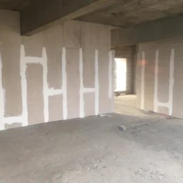</a>
<a href='https://www.manidhay.com/ready-made-aerated-concrete-wall-sai-angels-school-project-chikmagalur-2/'>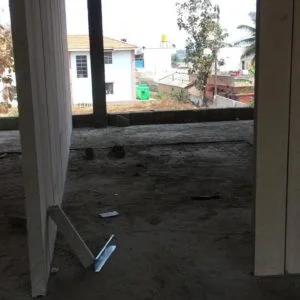</a>
<a href='https://www.manidhay.com/ready-made-aerated-concrete-wall-sai-angels-school-project-chikmagalur-3/'></a>
<a href='https://www.manidhay.com/ready-made-aerated-concrete-wall-sai-angels-school-project-chikmagalur-4/'>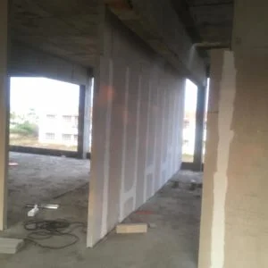</a>
<a href='https://www.manidhay.com/ready-made-aerated-concrete-wall-sai-angels-school-project-chikmagalur-5/'>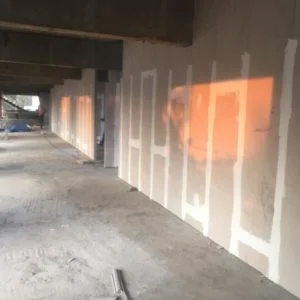</a>
<a href='https://www.manidhay.com/ready-made-aerated-concrete-wall-sai-angels-school-project-chikmagalur-6/'>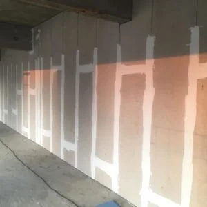</a>
<a href='https://www.manidhay.com/ready-made-aerated-concrete-wall-sai-angels-school-project-chikmagalur-7/'>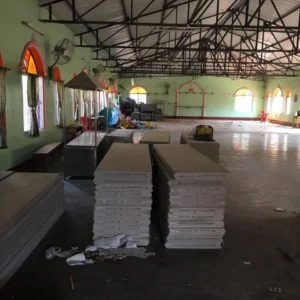</a>
<a href='https://www.manidhay.com/ready-made-aerated-concrete-wall-sai-angels-school-project-chikmagalur-8/'>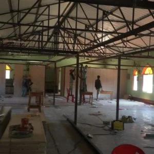</a>
<a href='https://www.manidhay.com/ready-made-aerated-concrete-wall-sai-angels-school-project-chikmagalur-9/'>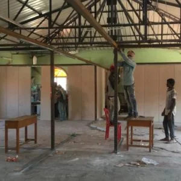</a>
<a href='https://www.manidhay.com/ready-made-aerated-concrete-wall-sai-angels-school-project-chikmagalur-10/'>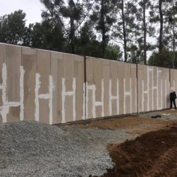</a>
		</div>
				</div>
					</div>
		</div>
							</div>
		</section>
							</div>
		<p>The post <a rel="nofollow" href="../../../projects/ready-made-aerated-concrete-wall-sai-angels-school-project-chikmagalur/index.html">Ready-made Aerated Concrete Wall, Sai Angels School Project, Chikmagalur</a> appeared first on <a rel="nofollow" href="../../../index.html">Manidhay Business Services</a>.</p>
]]></content:encoded>
					
		
		
			</item>
		<item>
		<title>Ready-made Aerated Concrete Wall, VCNR Group, Nelmangala, Bangalore</title>
		<link>https://www.manidhay.com/projects/ready-made-aerated-concrete-wall-vcnr-group-nelmangala-bangalore/</link>
		
		<dc:creator><![CDATA[Tilak Dutt]]></dc:creator>
		<pubDate>Mon, 20 Jul 2020 14:40:55 +0000</pubDate>
				<guid isPermaLink="false">../../../index.html

					<description><![CDATA[<p>•	PEB Structure – 2 Projects at VCNR Township, Nelmangala<br />
•	External wall of about 10’-0” was installed at site in both the projects<br />
•	Around 11,000 Sqft of wall area finished in 15 Days</p>
<p>The post <a rel="nofollow" href="../../../projects/ready-made-aerated-concrete-wall-vcnr-group-nelmangala-bangalore/index.html">Ready-made Aerated Concrete Wall, VCNR Group, Nelmangala, Bangalore</a> appeared first on <a rel="nofollow" href="../../../index.html">Manidhay Business Services</a>.</p>
]]></description>
										<content:encoded><![CDATA[		<div data-elementor-type="wp-post" data-elementor-id="792" class="elementor elementor-792">
									<section class="elementor-section elementor-top-section elementor-element elementor-element-10c5f111 elementor-section-boxed elementor-section-height-default elementor-section-height-default" data-id="10c5f111" data-element_type="section">
						<div class="elementor-container elementor-column-gap-default">
					<div class="aux-parallax-section elementor-column elementor-col-100 elementor-top-column elementor-element elementor-element-256d8794" data-id="256d8794" data-element_type="column">
			<div class="elementor-widget-wrap elementor-element-populated">
								<div class="elementor-element elementor-element-5efa12e6 elementor-widget elementor-widget-aux_breadcrumbs" data-id="5efa12e6" data-element_type="widget" data-widget_type="aux_breadcrumbs.default">
				<div class="elementor-widget-container">
			<div class="aux-elementor-breadcrumbs"><p class="aux-breadcrumbs"><span><span><a href="../../../index.html">Home</a></span> » <span class="breadcrumb_last" aria-current="page">Ready-made Aerated Concrete Wall</span></span></p></div>		</div>
				</div>
				<div class="elementor-element elementor-element-25c74e89 elementor-widget elementor-widget-aux-gallery" data-id="25c74e89" data-element_type="widget" data-widget_type="aux-gallery.default">
				<div class="elementor-widget-container">
			
<a href='https://www.manidhay.com/projects/ready-made-aerated-concrete-wall-vcnr-group-nelmangala-bangalore/attachment/ready-made-aerated-concrete-wall-vcnr-group-nelmangala-bangalore-1/'>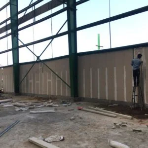</a>
<a href='https://www.manidhay.com/ready-made-aerated-concrete-wall-vcnr-group-nelmangala-bangalore-2/'>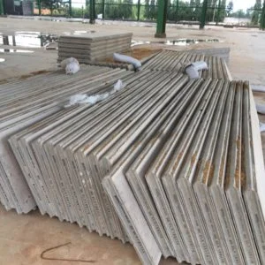</a>
<a href='https://www.manidhay.com/ready-made-aerated-concrete-wall-vcnr-group-nelmangala-bangalore-3/'>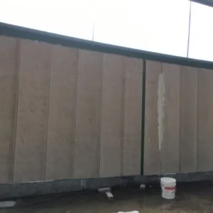</a>
<a href='https://www.manidhay.com/ready-made-aerated-concrete-wall-vcnr-group-nelmangala-bangalore-4/'>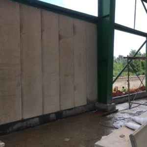</a>
<a href='https://www.manidhay.com/ready-made-aerated-concrete-wall-vcnr-group-nelmangala-bangalore-5/'>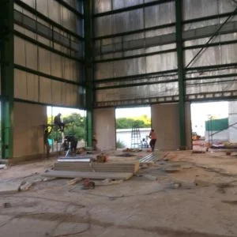</a>
<a href='https://www.manidhay.com/ready-made-aerated-concrete-wall-vcnr-group-nelmangala-bangalore-6/'>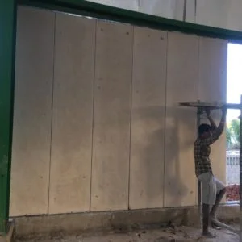</a>
<a href='https://www.manidhay.com/ready-made-aerated-concrete-wall-vcnr-group-nelmangala-bangalore-7/'>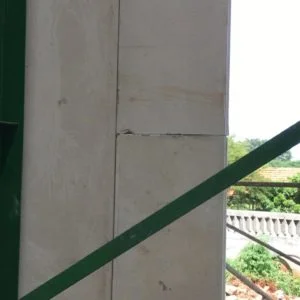</a>
<a href='https://www.manidhay.com/ready-made-aerated-concrete-wall-vcnr-group-nelmangala-bangalore-8/'>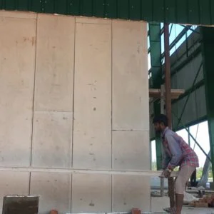</a>
<a href='https://www.manidhay.com/ready-made-aerated-concrete-wall-vcnr-group-nelmangala-bangalore-9/'>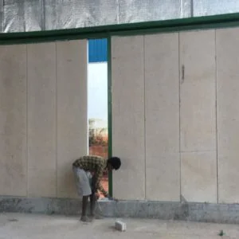</a>
<a href='https://www.manidhay.com/ready-made-aerated-concrete-wall-vcnr-group-nelmangala-bangalore-10/'>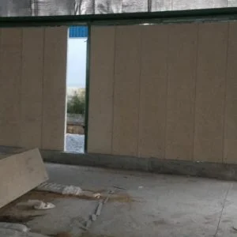</a>
<a href='https://www.manidhay.com/ready-made-aerated-concrete-wall-vcnr-group-nelmangala-bangalore-11/'>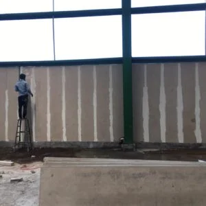</a>
<a href='https://www.manidhay.com/ready-made-aerated-concrete-wall-vcnr-group-nelmangala-bangalore-12/'>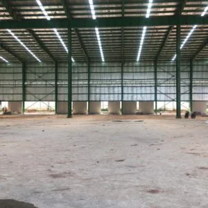</a>
<a href='https://www.manidhay.com/ready-made-aerated-concrete-wall-vcnr-group-nelmangala-bangalore-13/'>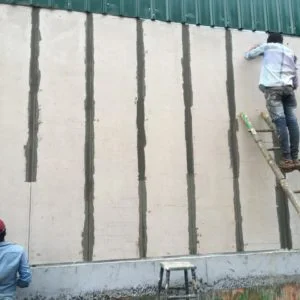</a>
<a href='https://www.manidhay.com/ready-made-aerated-concrete-wall-vcnr-group-nelmangala-bangalore-14/'>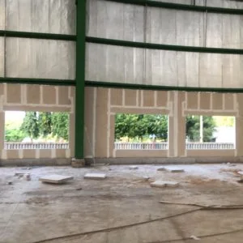</a>
<a href='https://www.manidhay.com/ready-made-aerated-concrete-wall-vcnr-group-nelmangala-bangalore-15/'>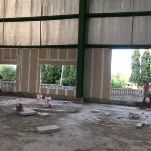</a>
<a href='https://www.manidhay.com/ready-made-aerated-concrete-wall-vcnr-group-nelmangala-bangalore-16/'>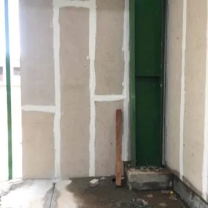</a>
<a href='https://www.manidhay.com/ready-made-aerated-concrete-wall-vcnr-group-nelmangala-bangalore-17/'>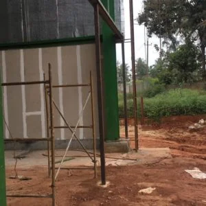</a>
<a href='https://www.manidhay.com/ready-made-aerated-concrete-wall-vcnr-group-nelmangala-bangalore-18/'>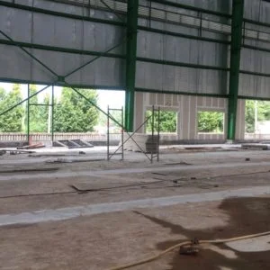</a>
<a href='https://www.manidhay.com/ready-made-aerated-concrete-wall-vcnr-group-nelmangala-bangalore-19/'>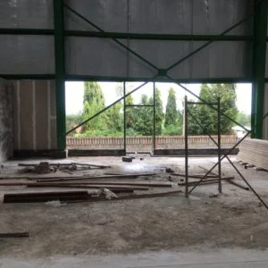</a>
<a href='https://www.manidhay.com/ready-made-aerated-concrete-wall-vcnr-group-nelmangala-bangalore-20/'>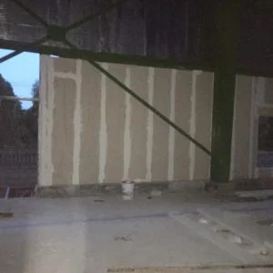</a>
		</div>
				</div>
					</div>
		</div>
							</div>
		</section>
							</div>
		<p>The post <a rel="nofollow" href="../../../projects/ready-made-aerated-concrete-wall-vcnr-group-nelmangala-bangalore/index.html">Ready-made Aerated Concrete Wall, VCNR Group, Nelmangala, Bangalore</a> appeared first on <a rel="nofollow" href="../../../index.html">Manidhay Business Services</a>.</p>
]]></content:encoded>
					
		
		
			</item>
		<item>
		<title>Ready-made Aerated Concrete Wall, St Marys School Project, Chikmagalur</title>
		<link>https://www.manidhay.com/projects/st-marys-school-project-chikmagalur/</link>
		
		<dc:creator><![CDATA[Tilak Dutt]]></dc:creator>
		<pubDate>Mon, 20 Jul 2020 14:25:07 +0000</pubDate>
				<guid isPermaLink="false">../../../index.html

					<description><![CDATA[<p>•	Simple steel structure at Second floor near Chikmagalur KSRTC Bus depot, above VRL Office Mudigere Road.<br />
•	External wall of about 10’-0” was installed at site<br />
•	Around 6,500 Sqft of wall area finished in 8 Days</p>
<p>The post <a rel="nofollow" href="../../../projects/st-marys-school-project-chikmagalur/index.html">Ready-made Aerated Concrete Wall, St Marys School Project, Chikmagalur</a> appeared first on <a rel="nofollow" href="../../../index.html">Manidhay Business Services</a>.</p>
]]></description>
										<content:encoded><![CDATA[		<div data-elementor-type="wp-post" data-elementor-id="769" class="elementor elementor-769">
									<section class="elementor-section elementor-top-section elementor-element elementor-element-3f6c428d elementor-section-boxed elementor-section-height-default elementor-section-height-default" data-id="3f6c428d" data-element_type="section">
						<div class="elementor-container elementor-column-gap-default">
					<div class="aux-parallax-section elementor-column elementor-col-100 elementor-top-column elementor-element elementor-element-303d25f6" data-id="303d25f6" data-element_type="column">
			<div class="elementor-widget-wrap elementor-element-populated">
								<div class="elementor-element elementor-element-4285db37 elementor-widget elementor-widget-aux_breadcrumbs" data-id="4285db37" data-element_type="widget" data-widget_type="aux_breadcrumbs.default">
				<div class="elementor-widget-container">
			<div class="aux-elementor-breadcrumbs"><p class="aux-breadcrumbs"><span><span><a href="../../../index.html">Home</a></span> » <span class="breadcrumb_last" aria-current="page">Ready-made Aerated Concrete Wall</span></span></p></div>		</div>
				</div>
				<div class="elementor-element elementor-element-65299135 elementor-widget elementor-widget-aux-gallery" data-id="65299135" data-element_type="widget" data-widget_type="aux-gallery.default">
				<div class="elementor-widget-container">
			
<a href='https://www.manidhay.com/projects/st-marys-school-project-chikmagalur/attachment/st-marys-school-project-chikmagalur-1/'>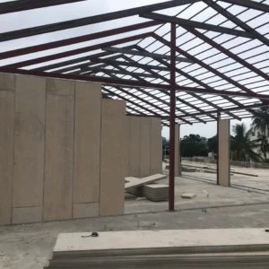</a>
<a href='https://www.manidhay.com/st-marys-school-project-chikmagalur-2/'>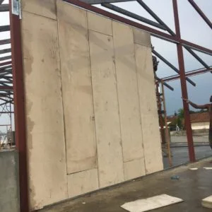</a>
<a href='https://www.manidhay.com/st-marys-school-project-chikmagalur-3/'>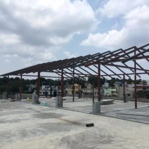</a>
<a href='https://www.manidhay.com/st-marys-school-project-chikmagalur-4/'>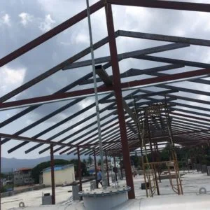</a>
<a href='https://www.manidhay.com/st-marys-school-project-chikmagalur-5/'>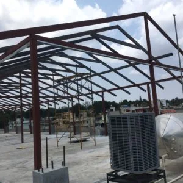</a>
<a href='https://www.manidhay.com/st-marys-school-project-chikmagalur-6/'>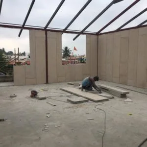</a>
<a href='https://www.manidhay.com/st-marys-school-project-chikmagalur-7/'>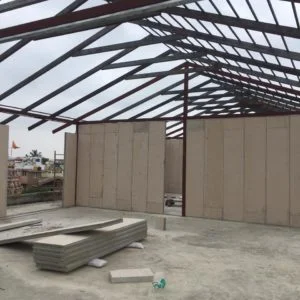</a>
<a href='https://www.manidhay.com/st-marys-school-project-chikmagalur-8/'>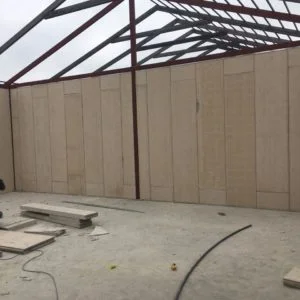</a>
<a href='https://www.manidhay.com/st-marys-school-project-chikmagalur-9/'>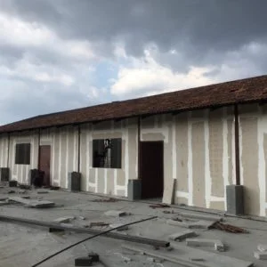</a>
<a href='https://www.manidhay.com/st-marys-school-project-chikmagalur-10/'>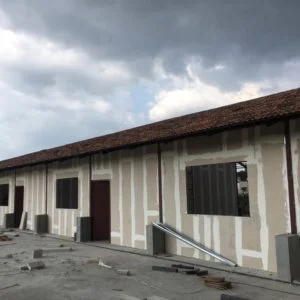</a>
<a href='https://www.manidhay.com/st-marys-school-project-chikmagalur-11/'>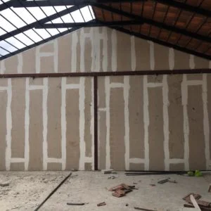</a>
<a href='https://www.manidhay.com/st-marys-school-project-chikmagalur-12/'>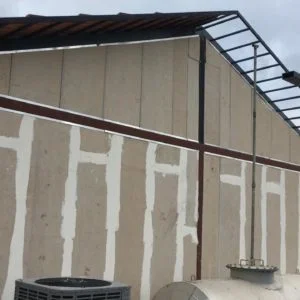</a>
<a href='https://www.manidhay.com/st-marys-school-project-chikmagalur-13/'>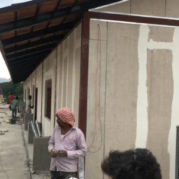</a>
<a href='https://www.manidhay.com/st-marys-school-project-chikmagalur-14/'>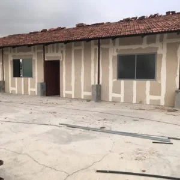</a>
<a href='https://www.manidhay.com/st-marys-school-project-chikmagalur-15/'>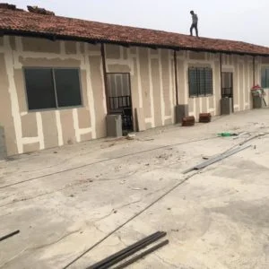</a>
		</div>
				</div>
					</div>
		</div>
							</div>
		</section>
							</div>
		<p>The post <a rel="nofollow" href="../../../projects/st-marys-school-project-chikmagalur/index.html">Ready-made Aerated Concrete Wall, St Marys School Project, Chikmagalur</a> appeared first on <a rel="nofollow" href="../../../index.html">Manidhay Business Services</a>.</p>
]]></content:encoded>
					
		
		
			</item>
		<item>
		<title>Ready-made Aerated Concrete Wall, Hosur Project</title>
		<link>https://www.manidhay.com/projects/ready-made-aerated-concrete-wall-hosur-project/</link>
		
		<dc:creator><![CDATA[Tilak Dutt]]></dc:creator>
		<pubDate>Thu, 21 Jun 2018 08:47:37 +0000</pubDate>
				<guid isPermaLink="false">https://manidhay.com/portfolio/modern-shopping-center/</guid>

					<description><![CDATA[<p>•	Pre Engineered Building at Shoolgiri near to Hosur<br />
•	The external wall of about 16’-0” was installed at the site<br />
•	Around 3,500 Sqft of wall area finished in 6 Days</p>
<p>The post <a rel="nofollow" href="../../../projects/ready-made-aerated-concrete-wall-hosur-project/index.html">Ready-made Aerated Concrete Wall, Hosur Project</a> appeared first on <a rel="nofollow" href="../../../index.html">Manidhay Business Services</a>.</p>
]]></description>
										<content:encoded><![CDATA[		<div data-elementor-type="wp-post" data-elementor-id="107" class="elementor elementor-107">
									<section class="elementor-section elementor-top-section elementor-element elementor-element-9aff681 elementor-section-boxed elementor-section-height-default elementor-section-height-default" data-id="9aff681" data-element_type="section">
						<div class="elementor-container elementor-column-gap-default">
					<div class="aux-parallax-section elementor-column elementor-col-100 elementor-top-column elementor-element elementor-element-291d546" data-id="291d546" data-element_type="column">
			<div class="elementor-widget-wrap elementor-element-populated">
								<div class="elementor-element elementor-element-efcebcb elementor-widget elementor-widget-aux_breadcrumbs" data-id="efcebcb" data-element_type="widget" data-widget_type="aux_breadcrumbs.default">
				<div class="elementor-widget-container">
			<div class="aux-elementor-breadcrumbs"><p class="aux-breadcrumbs"><span><span><a href="../../../index.html">Home</a></span> » <span class="breadcrumb_last" aria-current="page">Ready-made Aerated Concrete Wall</span></span></p></div>		</div>
				</div>
					</div>
		</div>
							</div>
		</section>
				<section class="elementor-section elementor-top-section elementor-element elementor-element-f503c06 elementor-section-full_width elementor-section-height-default elementor-section-height-default" data-id="f503c06" data-element_type="section">
						<div class="elementor-container elementor-column-gap-default">
					<div class="aux-parallax-section elementor-column elementor-col-100 elementor-top-column elementor-element elementor-element-3213fa5" data-id="3213fa5" data-element_type="column">
			<div class="elementor-widget-wrap elementor-element-populated">
								<div class="elementor-element elementor-element-f53a8a6 elementor-widget elementor-widget-aux-gallery" data-id="f53a8a6" data-element_type="widget" data-widget_type="aux-gallery.default">
				<div class="elementor-widget-container">
			
<a href='https://www.manidhay.com/ready-made-aerated-concrete-wall-hosur-project-1/'>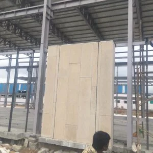</a>
<a href='https://www.manidhay.com/ready-made-aerated-concrete-wall-hosur-project-2/'>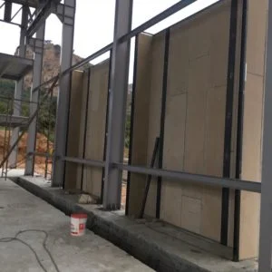</a>
<a href='https://www.manidhay.com/ready-made-aerated-concrete-wall-hosur-project-3/'>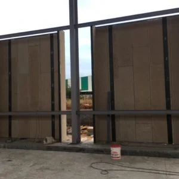</a>
<a href='https://www.manidhay.com/ready-made-aerated-concrete-wall-hosur-project-4/'>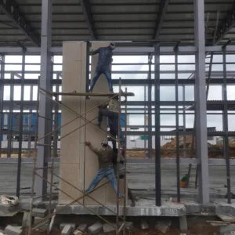</a>
<a href='https://www.manidhay.com/ready-made-aerated-concrete-wall-hosur-project-5/'></a>
<a href='https://www.manidhay.com/ready-made-aerated-concrete-wall-hosur-project-6/'>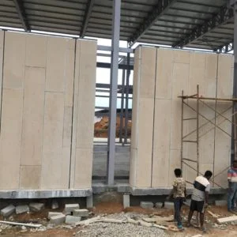</a>
<a href='https://www.manidhay.com/ready-made-aerated-concrete-wall-hosur-project-7/'></a>
<a href='https://www.manidhay.com/ready-made-aerated-concrete-wall-hosur-project-8/'>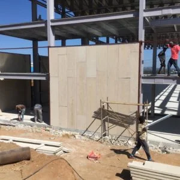</a>
<a href='https://www.manidhay.com/ready-made-aerated-concrete-wall-hosur-project-9/'></a>
<a href='https://www.manidhay.com/ready-made-aerated-concrete-wall-hosur-project-10/'></a>
<a href='https://www.manidhay.com/ready-made-aerated-concrete-wall-hosur-project-11/'></a>
<a href='https://www.manidhay.com/ready-made-aerated-concrete-wall-hosur-project-12/'></a>
<a href='https://www.manidhay.com/ready-made-aerated-concrete-wall-hosur-project-13/'></a>
<a href='https://www.manidhay.com/ready-made-aerated-concrete-wall-hosur-project-14/'></a>
<a href='https://www.manidhay.com/ready-made-aerated-concrete-wall-hosur-project-15/'></a>
<a href='https://www.manidhay.com/ready-made-aerated-concrete-wall-hosur-project-16/'></a>
<a href='https://www.manidhay.com/ready-made-aerated-concrete-wall-hosur-project-17/'></a>
<a href='https://www.manidhay.com/ready-made-aerated-concrete-wall-hosur-project-18/'></a>
		</div>
				</div>
					</div>
		</div>
							</div>
		</section>
							</div>
		<p>The post <a rel="nofollow" href="../../../projects/ready-made-aerated-concrete-wall-hosur-project/index.html">Ready-made Aerated Concrete Wall, Hosur Project</a> appeared first on <a rel="nofollow" href="../../../index.html">Manidhay Business Services</a>.</p>
]]></content:encoded>
					
		
		
			</item>
	</channel>
</rss>
